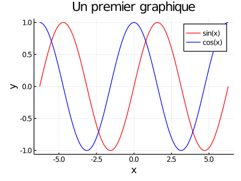
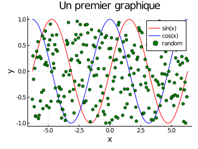
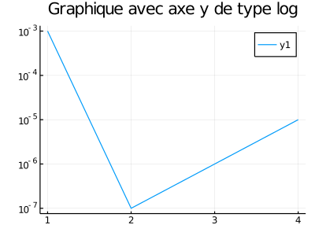

Julia vs MatLab
Cette page se veut une description sommaire des différences entre les languages de programmation MatLab et Julia. Cette page ne se veut pas être une revue exhaustive ni complète des différences entre ces deux langages, mais un sommaire permettant à un utilisateur habitué à MatLab de pouvoir être minimalement fonctionnel sur Julia. Un complément d'informations peut être trouvé sur cette page web de la documentation de Julia Noteworthy Differences from other Languages.
Quelques fonctions usuelles
Le tableau suivant se veut un recensement non-exhaustif de certaines commandes usuelles sur MatLab et Julia.
| Opération | MatLab | Julia | Librairie requise |
|---|---|---|---|
| Vecteur linéairement espacé | linspace | LinRange | |
| Valeur maximale d'un array | max | maximum | |
| Valeur minimale d'un array | min | minimum | |
| Résolution système linéaire | \ | \ | LinearAlgebra |
| Norme d'un vecteur | norm | norm | LinearAlgebra |
| Norm d'une matrice | norm | opnorm | LinearAlgebra |
| Affichage sur la console | fprintf | @printf | Printf |
| Moyenne d'un array | mean | mean | Statistics |
| Affichage d'un graphique | plot | plot | Plots |
Une des différences majeures entre Julia et MatLab est que MatLab représente par défaut ces données dans dans des matrices contenant des Float64, tandis que Julia type fortement ces variables. Notamment, Julia distingue les integer et les float à l'aide d'un point . suivant immédiatemment le nombre. Par exemple, la commande suivante crée un integer (Int64 sur la majorité des machines):
julia> a = 3
3
julia> typeof(a)
Int64Alors que la syntaxe suivante crée un float (Float64 sur la majorité des machines):
julia> b = 3.
3.0
julia> typeof(b)
Float64Aussi, Julia fait la différence entre une variable de type Float64 et un vecteur contenant des Float64.
julia> c = -1.
-1.0
julia> d = [-1.]
1-element Array{Float64,1}:
-1.0Ceci engendre donc des différences dans l'utilisation de certaines fonctions. Par exemple, si l'on veut calculer les valeurs absolues d'un Float64 et les valeurs absolues des éléments d'un vecteur (ou d'une matrice), on obtient les résultats suivants:
julia> abs(c)
1.0
julia> abs(d)
ERROR: MethodError: no method matching abs(::Array{Float64,1})
Closest candidates are:
abs(!Matched::Bool) at bool.jl:83
abs(!Matched::Float16) at float.jl:526
abs(!Matched::Float32) at float.jl:527
...Il sera indiqué à la section Opérations sur des vecteurs et des matrices comment effectuer cette opération simple à effectuer sur MatLab.
Création de vecteurs et de matrices
La première différence notable avec MatLab est le fait que Julia distingue les vecteurs des matrices. Les vecteurs sont des array de dimension 1, alors que les matrices sont des array dimension 2. En Julia, la convention adoptée est de type column-major order, les vecteurs sont de type colonne. Afin de créer un vecteur sur Julia, on emploie les crochets [] et on sépare les éléments par des virgules ou des point-virgules ;.
julia> x = [1,2,3]
3-element Array{Int64,1}:
1
2
3
julia> y = [1;2;3]
3-element Array{Int64,1}:
1
2
3Les matrices sont quant à elles créées encore à l'aide de crochets [], mais les éléments sur une même ligne doivent être séparés pas des espaces et un saut de ligne s'indique par le point-virgule ;.
julia> A = [1 2 3; 4 5 6]
2×3 Array{Int64,2}:
1 2 3
4 5 6La commande suivante créera un array de dimension 2 possédant une ligne et 3 colonnes au lieu d'un vecteur
z = [1 2 3]Opérations sur des vecteurs et des matrices
Julia récupère quelques éléments syntaxiques de MatLab concernant les opérations sur arrays, mais diffère sur quelques points. Comme dans MatLab, les opérations élément par élément s'effectuent à l'aide du point .. Ainsi, les opérations suivantes sont les mêmes que sur MatLab.
julia> v=[1,2]
2-element Array{Int64,1}:
1
2
julia> B=[1 2 ; 3 4]
2×2 Array{Int64,2}:
1 2
3 4
julia> C=[5 -6 ; -7 8]
2×2 Array{Int64,2}:
5 -6
-7 8
julia> B*C
2×2 Array{Int64,2}:
-9 10
-13 14
julia> B.*C
2×2 Array{Int64,2}:
5 -12
-21 32
julia> B^2
2×2 Array{Int64,2}:
7 10
15 22
julia> B.^2
2×2 Array{Int64,2}:
1 4
9 16
julia> B*v
2-element Array{Int64,1}:
5
11
julia> B.*v
2×2 Array{Int64,2}:
1 2
6 8La multiplication d'un vecteur ou une matrice par un nombre est définie comme sur MatLab.
julia> 2.5*v
2-element Array{Float64,1}:
2.5
5.0
julia> 2.5*B
2×2 Array{Float64,2}:
2.5 5.0
7.5 10.0
julia> C/3
2×2 Array{Float64,2}:
1.66667 -2.0
-2.33333 2.66667Les opérations différentes concernent notamment les opérations d'addition/soustraction et les comparaison logique. L'addition/soustraction d'un nombre et d'un vecteur/matrice n'est pas définie en Julia, il faut donc utiliser le ..
julia> 2 + B
ERROR: MethodError: no method matching +(::Int64, ::Array{Int64,2})
Closest candidates are:
+(::Any, ::Any, !Matched::Any, !Matched::Any...) at operators.jl:529
+(::T, !Matched::T) where T<:Union{Int128, Int16, Int32, Int64, Int8, UInt128, UInt16, UInt32, UInt64, UInt8} at int.jl:53
+(::Union{Int16, Int32, Int64, Int8}, !Matched::BigInt) at gmp.jl:528
...
julia> 2 .+ B
2×2 Array{Int64,2}:
3 4
5 6
julia> B - C
2×2 Array{Int64,2}:
-4 8
10 -4
julia> B .- C
2×2 Array{Int64,2}:
-4 8
10 -4Pour les opérateurs logiques, il faut aussi employer le . afin de comparer éléments par éléments.
julia> 2 == B
false
julia> 2 .== B
2×2 BitArray{2}:
0 1
0 0
julia> 2 .<= B
2×2 BitArray{2}:
0 1
1 1
julia> B<C
ERROR: MethodError: no method matching isless(::Array{Int64,2}, ::Array{Int64,2})
Closest candidates are:
isless(!Matched::Missing, ::Any) at missing.jl:87
isless(::Any, !Matched::Missing) at missing.jl:88
julia> B.<C
2×2 BitArray{2}:
1 0
0 1Étant donné que le point . permet à la fois de définir un float et d'effectuer les opérations éléments par éléments, il faut mettre des espaces entre les points afin de pouvoir distinguer la signification de chaque point .. La commande suivante:
5.+[1,2]produira le message d'erreur suivant:
ERROR: syntax: invalid syntax "5.*"; add space(s) to clarifyIl faut alors utiliser la syntaxe suivante:
5. .+ [1,2]Les fonctions mathématiques standards définies sur $\mathbb{R}$ n'acceptent pas des vecteurs sous Julia. Il faut donc employer le point . immédiatemment après le nom de la fonction afin d'appliquer la fonction élément par élément.
julia> cos(v)
ERROR: MethodError: no method matching cos(::Array{Int64,1})
Closest candidates are:
cos(!Matched::BigFloat) at mpfr.jl:744
cos(!Matched::Missing) at math.jl:1167
cos(!Matched::Complex{Float16}) at math.jl:1115
...
julia> cos.(v)
2-element Array{Float64,1}:
0.5403023058681398
-0.4161468365471424
julia> mod(B,3)
ERROR: MethodError: no method matching mod(::Array{Int64,2}, ::Int64)
Closest candidates are:
mod(!Matched::Missing, ::Number) at missing.jl:115
mod(!Matched::Unsigned, ::Signed) at int.jl:225
mod(!Matched::T, ::T) where T<:Integer at int.jl:221
...
julia> mod.(B,3)
2×2 Array{Int64,2}:
1 2
0 1Cette syntaxe s'applique à toute les fonctions écrit sur Julia, que cela soit les fonctions des librairies standards de Julia ou des fonctions créées par l'utilisateur.
Certaines fonctions mathématiques sont définies sur des matrices carrés, tels les fonctions trigonométriques, l'exponentiation et la puissance. Il faut donc faire attention à savoir si l'on veut effectuer ces opérations sur la matrice ou sur les éléments de la matrice. L'exemple suivant illustre ces différences:
M=[0 1 ; 2 -1]
exp(M)produit le résultat suivant:
2×2 Array{Float64,2}:
1.8573 0.860982
1.72196 0.996317Alors que la commande suivante:
exp.(M)effectue l'exponentiation élément par élément:
2×2 Array{Float64,2}:
1.0 2.71828
7.38906 0.367879Indexation, slices et concaténation de vecteurs et de matrices
On accède aux éléments d'un vecteur ou d'une matrice à l'aide des crochets [] comparativement à MatLab ou l'on accède aux éléments avec les parenthèse (). Le reste de la syntaxe est identique à celle de MatLab, la numérotation commence à 1 et le dernier élément peut être extrait avec end. Les dimensions sont aussi séparées par des virgules ,.
julia> w=[-1,2,3]
3-element Array{Int64,1}:
-1
2
3
julia> E=[1 2 3 ; 4 5 6 ; 7 8 9]
3×3 Array{Int64,2}:
1 2 3
4 5 6
7 8 9
julia> w[2:end]
2-element Array{Int64,1}:
2
3
julia> E[[1,3],1:2]
2×2 Array{Int64,2}:
1 2
7 8
julia> E[[1,3],[1:2]]
ERROR: ArgumentError: invalid index: UnitRange{Int64}[1:2] of type Array{UnitRange{Int64},1}La dernière commande engendre une erreur, ce qui permet d'illustrer une subtile différence entre Julia et MatLab. MatLab interprète la commande [1:2] en créant un vecteur contenant [1,2], alors que Julia crée un array d'array, ce qui génère l'erreur.
La concaténation s'effectue selon la même logique que la création d'une matrice, on emploie l'espace pour concaténer horizontalement et le point-virgule ; pour concaténer verticalement
julia> [E E]
3×6 Array{Int64,2}:
1 2 3 1 2 3
4 5 6 4 5 6
7 8 9 7 8 9
julia> [E;E]
6×3 Array{Int64,2}:
1 2 3
4 5 6
7 8 9
1 2 3
4 5 6
7 8 9
julia> [w E]
3×4 Array{Int64,2}:
-1 1 2 3
2 4 5 6
3 7 8 9
julia> [E ; w']
4×3 Array{Int64,2}:
1 2 3
4 5 6
7 8 9
-1 2 3La syntaxe pour modifier un ou des éléments d'un vecteur ou d'une matrice est la même que sur MatLab. Toutefois, puisque Julia est fortement typé, les commandes suivantes produisent des erreurs étant donné que les types ne concordent pas.
julia> E[1,1] = [-1]
ERROR: MethodError: Cannot `convert` an object of type Array{Int64,1} to an object of type Int64
Closest candidates are:
convert(::Type{T}, !Matched::T) where T<:Number at number.jl:6
convert(::Type{T}, !Matched::Number) where T<:Number at number.jl:7
convert(::Type{T}, !Matched::Ptr) where T<:Integer at pointer.jl:23
...
julia> E[2:3,[1,3]] = -4
ERROR: ArgumentError: indexed assignment with a single value to many locations is not supported; perhaps use broadcasting `.=` instead?En comparaison, les commandes suivantes ne produisent pas d'erreurs:
julia> E[1,1] = -1
-1
julia> E[1:1,1] = [-1]
1-element Array{Int64,1}:
-1
julia> E[2:3,[1,3]] .= -4
2×2 view(::Array{Int64,2}, 2:3, [1, 3]) with eltype Int64:
-4 -4
-4 -4Passer par valeur ou par référence?
Une différence majeure entre MatLab et Julia est le fait que MatLab effectue des copies de ses variables, alors que Julia effectue parfois le référencement.
julia> A = [1 2 ; 3 4]
2×2 Array{Int64,2}:
1 2
3 4
julia> B = A;
julia> B[1,1] = -9;
julia> A
2×2 Array{Int64,2}:
-9 2
3 4La deuxième commande ne crée pas une copie de A, mais indique plutôt que B pointe vers le même espace mémoire que A. Ainsi, toute modification à A ou à B sera effectuée sur les deux variables.
Toutefois, dès qu'une opération de slices consistant à extraire un sous-vecteur d'un array est effectuée, une copie est créée.
julia> A = [1 2 ; 3 4]
2×2 Array{Int64,2}:
1 2
3 4
julia> C = A[1,:]
2-element Array{Int64,1}:
1
2
julia> A[1,1] = -5;
julia> C
2-element Array{Int64,1}:
1
2Si l'on veut que la variable C pointe vers l'espace mémoire de A, il faut plutôt employer la fonction view.
julia> A = [1 2 ; 3 4]
2×2 Array{Int64,2}:
1 2
3 4
julia> D = view(A,1,1:2)
2-element view(::Array{Int64,2}, 1, 1:2) with eltype Int64:
1
2
julia> A[1,1] = -3;
julia> D
2-element view(::Array{Int64,2}, 1, 1:2) with eltype Int64:
-3
2Lorsqu'un array est passé en argument dans une fonction, l'argument est passé par référence. Ainsi, toute modification de cet array dans la fonction se réflètera à l'extérieur de cette fonction. Ceci constitue une très grosse différence par rapport à MatLab, où toutes les variables modifiées au sein d'une fonction sont passées par valeur et non par référence.
julia> A = [1 2 ; 3 4]
2×2 Array{Int64,2}:
1 2
3 4
julia> function demo!(M)
M[1,1] = -11
T = 1 .+ M
return T
end
demo! (generic function with 1 method)
julia> S = demo!(A)
2×2 Array{Int64,2}:
-10 3
4 5
julia> A
2×2 Array{Int64,2}:
-11 2
3 4Par convention, les fonctions modifiant les variables passées en arguments sont notées avec un point d'exclamation !.
Création d'une fonction
Sur MatLab, la création de fonctions ne peut s'effectuer qu'à la fin d'un script ou en écrivant un fichier .m contenant la définition d'une fonction. Julia est plus versatile, car des fonctions peuvent être définies n'importe où dans un script et même à l'intérieur d'autres fonctions. L'exemple suivant permet de définir la fonction $y(x) = x \cos(x) -e^x$.
julia> function exemple1(x)
y = x * cos(x) - exp(x)
return y
end
exemple1 (generic function with 1 method)
julia> x = LinRange(0,1,250)
250-element LinRange{Float64}:
0.0,0.00401606,0.00803213,0.0120482,…,0.987952,0.991968,0.995984,1.0
julia> z1 = exemple1.(x)
250-element Array{Float64,1}:
-1.0
-1.0000081075796525
-1.0000326031788653
-1.0000737462793636
-1.0001317966146634
-1.0002070141659003
-1.0002996591576678
-1.0004099920538576
-1.0005382735535076
-1.0006847645866503
⋮
-2.083500102225461
-2.0950350572987104
-2.106648119542739
-2.1183395175454183
-2.130109479580855
-2.141958233610092
-2.1538860072818515
-2.1658930279333086
-2.1779795225909053la fonction est appellée avec un point étant donné que le veut évaluer la fonction sur chaque élément du vecteur x.
Cette dernière fonction peut être définie de manière plus compacte ainsi:
julia> exemple2(x) = x * cos(x) - exp(x)
exemple2 (generic function with 1 method)
julia> z2 = exemple2.(x)
250-element Array{Float64,1}:
-1.0
-1.0000081075796525
-1.0000326031788653
-1.0000737462793636
-1.0001317966146634
-1.0002070141659003
-1.0002996591576678
-1.0004099920538576
-1.0005382735535076
-1.0006847645866503
⋮
-2.083500102225461
-2.0950350572987104
-2.106648119542739
-2.1183395175454183
-2.130109479580855
-2.141958233610092
-2.1538860072818515
-2.1658930279333086
-2.1779795225909053Voici un exemple d'une fonction permettant de retourner les éléments d'un vecteur plus petit ou égal à une valeur p et les valeurs strictement plus grande que p.
julia> function exemple3(x,p)
vector_petit = x[x .<= p]
vector_grand = x[x .> p]
return vector_petit , vector_grand
end
exemple3 (generic function with 1 method)
julia> test = [1,5,-9,3,-5,2,8,12,7]
9-element Array{Int64,1}:
1
5
-9
3
-5
2
8
12
7
julia> (vec1,vec2) = exemple3(test,2);
julia> vec1
4-element Array{Int64,1}:
1
-9
-5
2
julia> vec2
5-element Array{Int64,1}:
5
3
8
12
7Scope/portée des variables
Une autre différence majeure entre MatLab et Julia réside dans la portée/scope des variables. Sur MatLab, les variables globales doivent être déclarées à la fois dans le script et dans les fonctions employant ces variables. Ces variables peuvent être modifiées et ces modifications seront accessibles partout. Sur Julia, les variables globales sont celles définies dans un script, le REPL ou dans un module. Les variables globales dans Julia peuvent seulement être modifiées dans le scope global (changer des éléments d'un array ne consiste pas à changer la variable). Les fonctions et les boucles for/while introduisent un scope local qui hérite de toutes les variables du scope parent (qu'elles soient globales ou locales). Si une variable introduite dans le scope local possède le même nom qu'une variable globale, une nouvelle variable possédant le même nom sera créée, mais sa portée sera restreint qu'au scope local (c'est pourquoi, dans l'exemple suivant, la variable c n'est pas définie en dehors de la boucle for).
julia> b = 1
1
julia> for t=1:5
b = -2
c = t + b
println(c)
end
-1
0
1
2
3
julia> b
1
julia> c
ERROR: UndefVarError: c not defined
julia> function test1()
b = 3
println(b)
end
test1 (generic function with 1 method)
julia> test1()
3
julia> b
1Le script suivant produit une erreur étant donné que la variable b dans le scope de la boucle for ne correspond pas au b du scope global. Une nouvelle variable b est alors créée dans le scope de la boucle for, ce qui engendre une erreur puisque cette variable n'est pas initialisée.
julia> b = 1
1
julia> for t=1:10
b = b + 1
end
ERROR: UndefVarError: b not definedLes variables locales sont aussi passées aux scopes enfants. Ces variables peuvent toutefois être modifiées à l'intérieur de ces scopes enfants, contrairement aux variables globales.
julia> b = 1
1
julia> function test2()
x = 2
function test_in()
x = 3
return x + b
end
return test_in() + x
end
test2 (generic function with 1 method)
julia> test2()
7Affichage de textes et de tableaux sur la console
Afin d'afficher une ligne de texte sur MatLab, on emploie la commande fprintf, alors que sur Julia, il faut utiliser la macro @printf. Cette macro se retrouve dans le package Printf qui doit être importé. Le reste de la syntaxe reste néanmoins similaire à celle de MatLab.
julia> using Printf
julia> n = 1:6; v1 = 2 .^ n; v2 = 2 .^ (1 ./ n);
julia> @printf("n 2^n 2^(1/n)\n")
n 2^n 2^(1/n)
julia> for t=1:length(n)
@printf("%2d %2d %16.15e\n",n[t],v1[t],v2[t])
end
1 2 2.000000000000000e+00
2 4 1.414213562373095e+00
3 8 1.259921049894873e+00
4 16 1.189207115002721e+00
5 32 1.148698354997035e+00
6 64 1.122462048309373e+00Affichage de graphiques
Afin d'afficher des graphiques avec Julia, il faut utiliser le package Plots, en employant la commande using Plots. Les attributs spécifiant les propriétés des courbes et des graphiques doivent être décrites lors de la création de ces mêmes courbes, comparativement à Matlab. L'exemple suivant permet de créer une courbe rouge représentant la fonction sin et une courbe bleue représentant la fonction cos.
julia> using Plots
julia> x = LinRange(-2*pi,2*pi,250); y1 = sin.(x); y2 = cos.(x);
julia> plot(x,y1,label="sin(x)",color="red")
Plot{Plots.GRBackend() n=1}
julia> plot!(x,y2,label="cos(x)",color="blue",xlabel="x",ylabel="y",title="Un premier graphique")
Plot{Plots.GRBackend() n=2}
┌ Warning: Keyword argument letter not supported with Plots.GRBackend(). Choose from: Set([:top_margin, :group, :background_color, :yforeground_color_text, :yguidefontcolor, :seriesalpha, :legendfontcolor, :seriescolor, :ztick_direction, :zlims, :overwrite_figure, :xguidefonthalign, :normalize, :linestyle, :xflip, :fillcolor, :ygrid, :background_color_inside, :zguidefonthalign, :bins, :yscale, :xtickfontcolor, :xguide, :fillalpha, :tick_direction, :yguidefontsize, :legendfontfamily, :foreground_color, :xtickfonthalign, :x, :ytickfontrotation, :legend, :discrete_values, :ytick_direction, :xguidefontrotation, :ribbon, :tickfontrotation, :xdiscrete_values, :legendtitle, :xgridstyle, :orientation, :gridstyle, :markersize, :camera, :xforeground_color_grid, :quiver, :zticks, :markerstrokecolor, :ztickfontrotation, :ztickfonthalign, :legendfonthalign, :xtickfontsize, :levels, :zgridstyle, :foreground_color_border, :zguidefontvalign, :marker_z, :markerstrokealpha, :markeralpha, :tickfontvalign, :zguidefontcolor, :ygridlinewidth, :zlink, :zscale, :smooth, :xticks, :zguidefontsize, :y, :margin, :ytickfontcolor, :yforeground_color_border, :zguidefontfamily, :zgridalpha, :yguidefontvalign, :yguidefonthalign, :ztickfontcolor, :html_output_format, :tickfontcolor, :titlefontrotation, :legendfontvalign, :tickfontsize, :z, :yforeground_color_axis, :xtickfontrotation, :xerror, :contour_labels, :xguidefontcolor, :primary, :guidefonthalign, :aspect_ratio, :link, :colorbar_title, :yguide, :guidefontvalign, :yguidefontfamily, :layout, :polar, :right_margin, :xlink, :series_annotations, :inset_subplots, :ytickfontsize, :tickfontfamily, :show_empty_bins, :xgrid, :ygridalpha, :xtick_direction, :colorbar, :zflip, :ticks, :legendfontrotation, :linealpha, :arrow, :xtickfontvalign, :zgrid, :bar_width, :zguide, :zforeground_color_text, :weights, :xgridalpha, :ygridstyle, :fill_z, :ztickfontfamily, :markershape, :background_color_subplot, :xguidefontvalign, :markerstrokewidth, :xguidefontfamily, :gridlinewidth, :foreground_color_subplot, :xgridlinewidth, :foreground_color_text, :titlefonthalign, :yerror, :zgridlinewidth, :grid, :xguidefontsize, :xforeground_color_axis, :background_color_outside, :titlefontcolor, :line_z, :size, :projection, :zguidefontrotation, :ydiscrete_values, :seriestype, :yflip, :fillrange, :ztickfontvalign, :xlims, :xforeground_color_border, :markercolor, :ylink, :yforeground_color_grid, :color_palette, :lims, :xscale, :left_margin, :annotations, :window_title, :foreground_color_axis, :yguidefontrotation, :guidefontsize, :zdiscrete_values, :tickfonthalign, :bottom_margin, :framestyle, :zerror, :scale, :zforeground_color_border, :background_color_legend, :linecolor, :foreground_color_legend, :title, :subplot_index, :flip, :titlefontvalign, :foreground_color_grid, :linewidth, :ztickfontsize, :gridalpha, :guidefontfamily, :ylims, :xtickfontfamily, :ytickfontvalign, :ytickfontfamily, :xforeground_color_text, :show, :guidefontrotation, :legendfontsize, :subplot, :label, :ytickfonthalign, :guide, :guidefontcolor, :match_dimensions, :titlefontsize, :titlefontfamily, :zforeground_color_axis, :zforeground_color_grid, :colorbar_entry, :yticks])
└ @ Plots ~/.julia/packages/Plots/8GUYs/src/args.jl:1140
Le titre de chaque courbe est spécifié avec l'attribut label et la couleur avec l'attribut color. Pour afficher plusieurs courbes sur le même graphique, il faut utiliser la commande terminée par un ! (ici la commande est plot!). Finalement, le titre des axes et du graphiques sont spécifiés.
Afin d'afficher des points sur un graphique, on change l'attribut linetype pour scatter.
julia> y3 = 2 .* rand(length(x)) .- 1;
julia> plot!(x,y3,label="random",color="green",linetype="scatter")
Plot{Plots.GRBackend() n=4}
Afin de créer un graphique avec des axes en base logarithmique, il faut employer l'attribut xscale=:log10 pour l'axe x ou yscale=:log10 pour l'axe y. Le package Plots génèrera toutefois des erreurs si des éléments sont nuls ou négatifs lorsque l'on emploie des axes logarithmiques. Il faut donc seulement selectionner les éléments strictement plus grand que 0.
julia> data_x = 1:5;
julia> data_y = [1e-3,1e-7,-1e-4,1e-5,0];
julia> plot(data_x[data_y.>0],data_y[data_y.>0],yscale=:log10,title="Graphique avec axe y de type log")
Plot{Plots.GRBackend() n=1}
La description complète des attributs des graphiques est disponible à ce lien: http://docs.juliaplots.org/latest/attributes/.